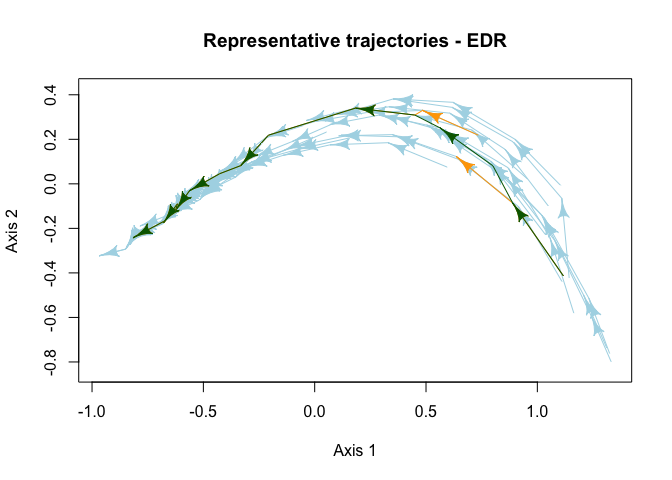

Analysis of Ecological Dynamic Regimes
ecoregime implements the EDR framework to characterize and compare groups of ecological trajectories in multidimensional spaces defined by ecosystem state variables. The EDR framework was introduced in:
Sánchez-Pinillos, M., Kéfi, S., De Cáceres, M., Dakos, V. 2023. Ecological Dynamic Regimes: Identification, characterization, and comparison. Ecological Monographs. doi:10.1002/ecm.1589
Installation
You can install ecoregime via CRAN:
install.packages("ecoregime")You can also install the development version of ecoregime with:
# install.packages("devtools")
devtools::install_github("MSPinillos/ecoregime")You can get an overview about its functionality and the workflow of the EDR framework in the package documentation and vignette.
# Force the inclusion of the vignette in the installation
devtools::install_github("MSPinillos/ecoregime",
build_opts = c("--no-resave-data", "--no-manual"),
build_vignettes = TRUE)
# Load the package after the installation
library(ecoregime)
# Access the documentation and vignette
?ecoregime
vignette("EDR_framework", package = "ecoregime")Usage
Identify and plot representative trajectories in ecological dynamic regimes.
library(ecoregime)
# Calculate state dissimilarities from a matrix of state variables (e.g., species abundances)
variables <- data.frame(EDR_data$EDR1$abundance)
d <- vegan::vegdist(variables[, -c(1:3)])
# Identify the trajectory (or site) and states in d
trajectories <- variables$traj
states <- as.integer(variables$state)
# Compute RETRA-EDR
RT <- retra_edr(d = d, trajectories = trajectories, states = states,
minSegs = 5)
# Plot representative trajectories of the EDR
plot(x = RT, d = d, trajectories = trajectories, states = states, select_RT = "T2",
traj.colors = "lightblue", RT.colors = "orange", sel.color = "darkgreen",
link.lty = 1, asp = 1, main = "Representative trajectories - EDR")
Characterize the internal structure of ecological dynamic regimes calculating the dispersion (dDis), beta diversity (dBD), and evenness (dEve) of the individual trajectories.
# Dynamic dispersion considering trajectory "1" as a reference
dDis(d = d, d.type = "dStates", trajectories = trajectories, states = states, reference = "1")
#> dDis (ref. 1)
#> 0.267622
# Dynamic beta diversity
dBD(d = d, d.type = "dStates", trajectories = trajectories, states = states)
#> dBD
#> 0.03969095
# Dynamic evenness
dEve(d = d, d.type = "dStates", trajectories = trajectories, states = states)
#> dEve
#> 0.7100773Compare ecological dynamic regimes.
# Load species abundances and compile in a data frame
variables1 <- EDR_data$EDR1$abundance
variables2 <- EDR_data$EDR2$abundance
variables3 <- EDR_data$EDR3$abundance
all_variables <- data.frame(rbind(variables1, variables2, variables3))
# Calculate dissimilarities between every pair of states
d <- vegan::vegdist(all_variables[, -c(1:3)])
# Compute dissimilarities between EDRs:
dist_edr(d = d, d.type = "dStates",
trajectories = all_variables$traj, states = all_variables$state,
edr = all_variables$EDR, metric = "dDR", symmetrize = NULL)
#> 1 2 3
#> 1 0.0000000 0.5895458 0.3458250
#> 2 0.5700499 0.0000000 0.4907364
#> 3 0.4033212 0.6068221 0.0000000Citation
To cite ecoregime in publications use:
Sánchez-Pinillos M, Kéfi S, De Cáceres M, Dakos V (2023). “Ecological dynamic regimes: Identification, characterization, and comparison.” Ecological Monographs. https://doi.org/10.1002/ecm.1589.
Sánchez-Pinillos M (2023). ecoregime: Analysis of Ecological Dynamic Regimes. https://doi.org/10.5281/zenodo.7584943.